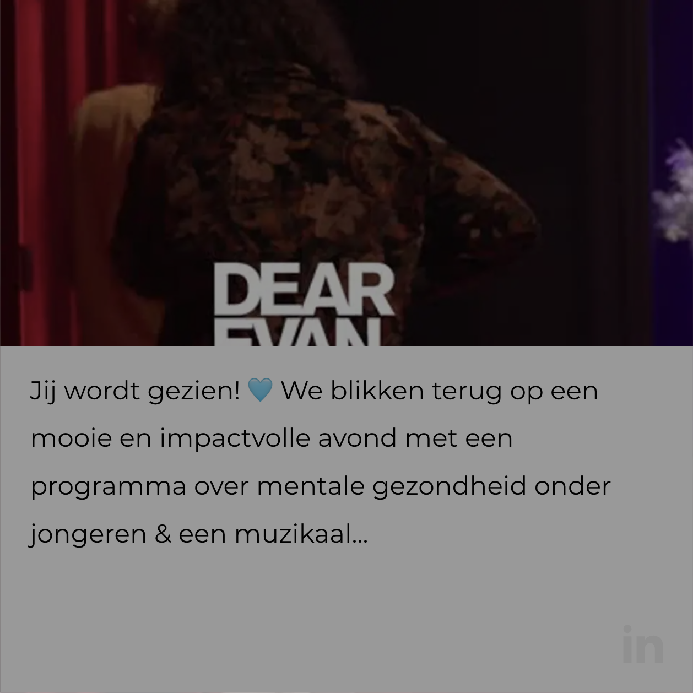
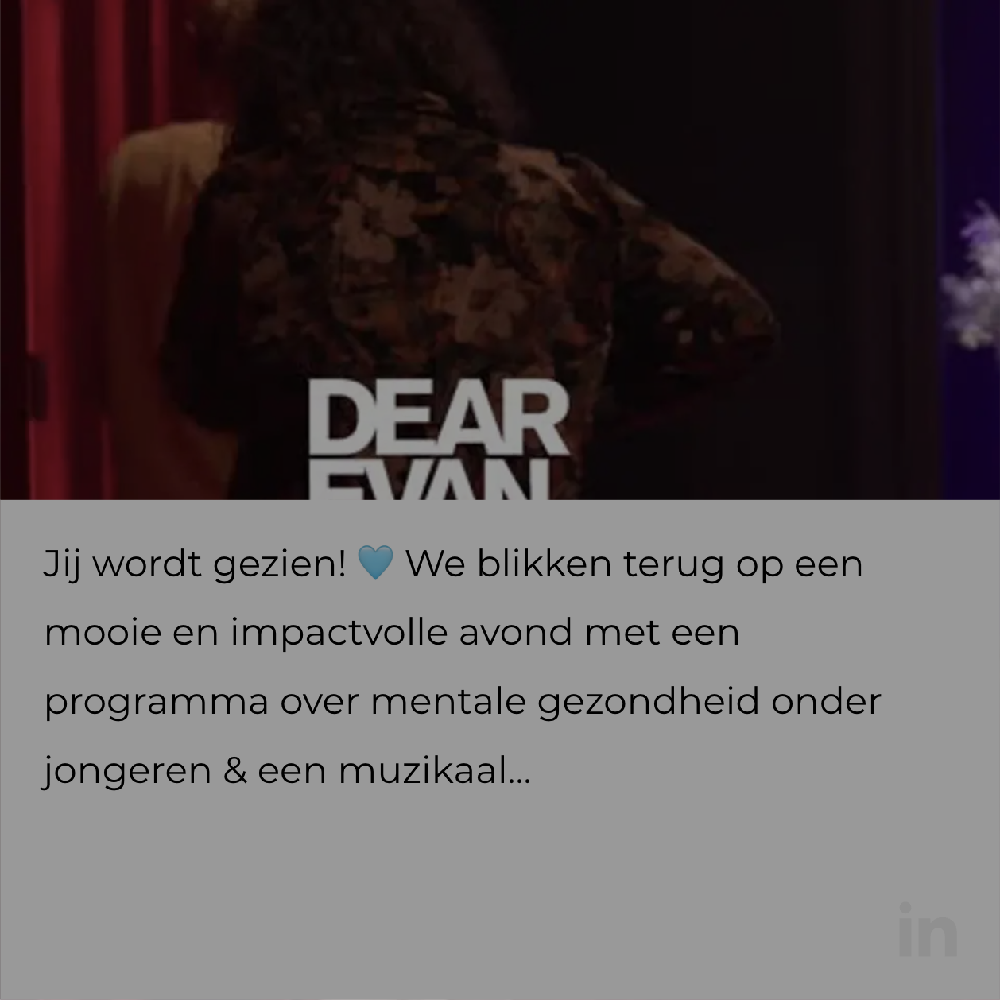

of bel
020 555 2680
of bel
020 555 2680

Wim Zonneveld zaal
Max. capaciteit: 949
Meest geschikt voor:
- Groot scherm van 6 meter breed (16:9)
- 13.000 ANSI lumen laser beamer
- Technische voorzieningen
Een onvergetelijk congres, evenement of vergadering in het theater? Bij DeLaMar leggen we de rode loper voor je uit.
Ontdek de Mogelijkheden of bel 020 555 2680DeLaMar beschikt over twee theaterzalen en diverse sfeervolle foyers. Hierdoor hebben we voor elke (zakelijke) gelegenheid een geschikte en unieke ruimte.
Max. capaciteit: 949
Meest geschikt voor:
Max. capaciteit: 601
Meest geschikt voor:
Max. capaciteit: 330
Meest geschikt voor:
De historische gevel, indrukwekkende zalen, intieme foyers en bijzondere fotocollecties maken van DeLaMar een inspirerende omgeving voor elk evenement.

Alle benodigde faciliteiten zijn in ons gebouw aanwezig, of worden speciaal ingehuurd. Wij zorgen ervoor dat het je aan niets ontbreekt.

Hostmanship staat bij ons hoog in het vaandel. We denken vooruit en overtreffen verwachtingen, zodat jij je nergens zorgen over hoeft te maken.
Ons historische pand met moderne uitstraling biedt volop mogelijkheden voor zowel kleine als grote evenementen. Of het nu gaat om een congres, exclusief diner of première: alles is op jouw specifieke wensen aan te passen. Daarnaast staan onze gastvrije en ervaren medewerkers altijd klaar om iedereen een onvergetelijk evenement te bezorgen!
"The team at Delamar Theater provided professional, quality, and personalized service for our 300 pax conference in January 2018. The full day event was a major success."
Booking.com Bekijk case"Een evenement organiseren in het DeLaMar Theater is echt een feestje! De samenwerking voelt als een warm bad, dankzij de enorme gastvrijheid van alle medewerkers. De proactieve en flexibele aanpak van het team, van techniek tot catering, zorgt ervoor dat alles soepel verloopt en je als organisator volledig wordt ontzorgd. De prachtige locatie geeft je evenement echt iets extra's."
Universiteit van Amsterdam Bekijk case"The DeLaMar Theater was widely praised by delegates for its light and airy spaces, the undeniably stylish decor, abundant networking facilities and central location. The DeLaMar was a positive move."
Amsterdam Dance Event Bekijk case"De sprekers waren zeer tevreden en ook de bezoekers waren onder de indruk. Jullie professionele en vriendelijke service heeft zeer aan de goede sfeer en de succesvolle middag bijgedragen."
Nexus instituut"The team at the DeLaMar Theatre were a delight to work with and the venue itself is beautiful and well equipped, perfect for a digital design focused event like ours."
Awwwards Bekijk case"Voor het organiseren van ons tiende bunq Update event zijn we perfect geholpen door de mensen van DeLaMar. Snel, flexibel en bovenal megaprofessioneel!"
bunq Bekijk caseMet trots presenteren we hier de organisaties waar we mee samenwerken. Ben je nieuwsgierig of wil je ook partner worden?
Meer informatieOp de hoogte blijven van de grenzeloze zakelijke mogelijkheden binnen ons bijzondere theater? Meld je dan aan voor onze zakelijke nieuwsbrief!
lees onze privacy- en cookieverklaring
 



 Bekijk de plattegrond
Bekijk de plattegrond